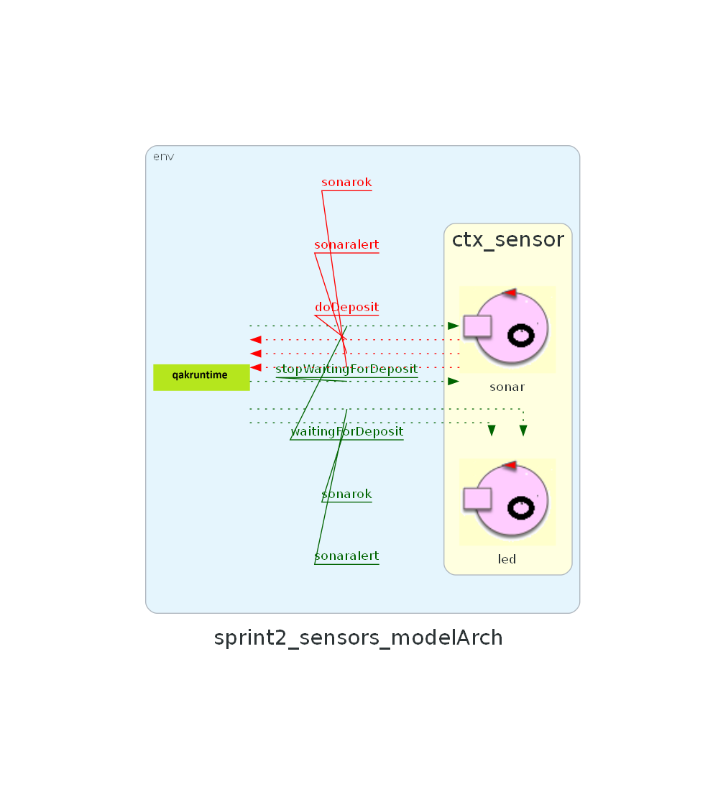

Introduction
Nello Sprint precedente sono state analizzate le problematiche ed è stato progettato il Core Business del del sistema cargoservice.
L'output finale è stato una modellazione di alto livello del sistema e una prima implementazione funzionante (figura a destra).
L'obiettivo dello Sprint 2 è di analizzare le problematiche relative al componente Sensor e realizzarne un'implementazione funzionante, integrandola con il corebusiness del sistema. D'ora in avanti ci riferiremo al corebusiness del sistema chiamandolo semplicemente cargoservice.
L'obiettivo dello Sprint 2 è di analizzare le problematiche relative al componente Sensor e realizzarne un'implementazione funzionante, integrandola con il corebusiness del sistema. D'ora in avanti ci riferiremo al corebusiness del sistema chiamandolo semplicemente cargoservice.

Requirements
I requisiti che intendiamo soddisfare in questo sprint sono i
seguenti:
- Il sensore, posto di fronte alla IOPort è un sonar utilizzato per rilevare la presenza di un product container, quando misura una distanza D tale che D < DFREE/2 per un tempo ragionevole (es. 3 secondi)
- Quando il sonar misura una distanza D > DFREE per almeno 3 secondi il sistema interrompe le prorpie attività e si accende un led. Il servizio riparte appena il sonar misura una distanza D <= DREE
Problem analysis
Come modellare Sensor e i suoi componenti?
Dall'analisi dei requisiti emerge la necessità di gestire almeno due componenti hardware: un sonar per il rilevamento dei prodotti e un led per la segnalazione fisica dei malfunzionamenti.
Per l'implementazione del sistema, vista la natura dei componenti da gestire, verrà utilizzata una scheda RaspberryPi.
Le possibili soluzioni di modellazione del contesto sensor e dei suoi componenti sono:
Le possibili soluzioni di modellazione del contesto sensor e dei suoi componenti sono:
- Modellare sensor come un unico componente che si occupa di gestire sia il sonar che il led modellati come POJO
- Modellare sensor come un contesto che a sua volta contiene due attori, uno sonar e uno led
Sonar
Parlando in dettaglio del componente sonar sorge spontaneo domandarsi se:
inoltre all'interno del sistema precedentemente modellato sono già stati definiti gli eventi che il sonar può sfruttare per interagire con cargoservice:
- sia opportuno fare in modo che il sonar comunichi direttamente con il cargoservice ogni volta che si verifica un evento di interesse (rilevamento prodotto o malfunzionamento)
- sia meglio che il sonar comunichi con cargoservice ogni distanza rilevata
- l'evento waitingForDeposit segnala che una richiesta di caricamento è stata accettata da cargoservice e il sonar avvia la rilevazione dei prodotti
- l'evento stopWaitingForDeposit segnala al sonar che il caricamento è terminato e non c'è nessuna richiesta di caricamento in sospeso, arrestando la rilevazione
inoltre all'interno del sistema precedentemente modellato sono già stati definiti gli eventi che il sonar può sfruttare per interagire con cargoservice:
- il sonar ha rilevato un prodotto (D < DFREE/2 per minimo 3 secondi); scatena l'evento doDeposit
- il sonar rileva un malfunzionamento (D > DFREE per minimo 3 secondi); scatena l'evento sonaralert
- il sonar esce dallo stato di malfunzionamento (almeno una misurazione D < DFREE); scatena l'evento sonarok
Come sfruttare il sonar fisico?
Occorre domandarsi come il componente software sonar possa relazionarsi con il componente hardware sonar. Fortunatamente il committente ha precedentemente fornito uno script Python che permette di interfacciarsi con l'hardware del RaspberryPi sfruttando la libreria GPIO e si occupa di recuperare le distanze lette dal sonar, ottenendo una misurazione della distanza D a intervalli della durata di un secondo.# File: sonar.py
import RPi.GPIO as GPIO
import time
import sys
GPIO.setmode(GPIO.BCM)
GPIO.setwarnings(False)
TRIG = 17
ECHO = 27
GPIO.setup(TRIG, GPIO.OUT)
GPIO.setup(ECHO, GPIO.IN)
GPIO.output(TRIG, False) # TRIG parte LOW
print ('Waiting a few seconds for the sensor to settle')
time.sleep(2)
while True:
GPIO.output(TRIG, True) #invia impulso TRIG
time.sleep(0.00001)
GPIO.output(TRIG, False)
pulse_start = time.time()
#attendi che ECHO parta e memorizza tempo
while GPIO.input(ECHO)==0:
pulse_start = time.time()
# register the last timestamp at which the receiver detects the signal.
while GPIO.input(ECHO)==1:
pulse_end = time.time()
pulse_duration = pulse_end - pulse_start
# velocità del suono ~= 340m/s
# distanza = v*t
# il tempo ottenuto misura un roundtrip -> distanza = v*t/2
distance = pulse_duration * 17165
distance = round(distance, 1)
print ('Distance:', distance,'cm')
sys.stdout.flush()
time.sleep(1)Led
Il led come da requisiti ha il compito di accendersi e spegnersi
in base allo stato di funzionamento del sonar.
La rilevazione dello stato del sonar può avvenire in tre modi:
- Il led intercetta gli eventi di interesse inviati dal sonar a cargoservice e si accende/spegne di conseguenza
- Il cargoservice invia un messaggio al led per accendersi/spegnersi in base allo stato del sonar
- Il sonar comunica con messaggi diretti al led i propri cambi di stato
Come sfruttare il led fisico?
Per quanto riguarda l'interfacciamento con l'hardware, anche in questo caso il committente ha fornito degli utili script Python, uno per l'accensione:#file ledPython25On.py
import RPi.GPIO as GPIO
import time
'''
----------------------------------
CONFIGURATION
'''
GPIO.setmode(GPIO.BCM)
GPIO.setup(25,GPIO.OUT)
'''
----------------------------------
main activity
----------------------------------
'''
GPIO.output(25,GPIO.HIGH)
#file ledPython25Off.py
# -------------------------------------------------------------
#
# -------------------------------------------------------------
import RPi.GPIO as GPIO
import time
'''
----------------------------------
CONFIGURATION
----------------------------------
'''
GPIO.setmode(GPIO.BCM)
GPIO.setup(25,GPIO.OUT)
'''
----------------------------------
main activity
----------------------------------
'''
GPIO.output(25,GPIO.LOW)Logical Architecture

Test plans
Lo scopo della fase di test è quello di verificare il corretto funzionamento del
sistema modellato, cioè del contesto sensor.
| Test | Attori | Descrizione | Modello |
|---|---|---|---|
| Verifica errore | led; sonar; | Il sonar riceve per 3 secondi misurazioni maggiori di DFREE, il sistema va in errore e il led si accende. Alla ricezione della prima misurazione minore di DFREE il sistema rientra dal guasto e il led si spegne. | TestSonarSystem.java |
| Verifica invio doDeposit | led; sonar; | Led inizialmente spento, il sonar per 3 secondi riceve misurazioni maggiori di DFREE/2 e minori di DFREE. Il sistema emette l'evento doDeposit. | TestSonarSystem.java | Verifica nessun errore con 2 misurazioni | led; sonar; | Il sonar riceve per 2 secondi misurazioni maggiori di DFREE, il sistema non va in guasto e il led rimane spento. | TestSonarSystem.java | Verifica robustezza a cicli multipli | led; sonar; | Si itera la sequenza guasto e rientro dal guasto più volte consecutivamente, andando a verificare che il led si accenda e spenga correttamente. | TestSonarSystem.java |
Project
Per seguire il single responsibility principle è stato deciso di affidare
a diversi attori la gestione delle distinte parti del sistema.
Gestione del sonar
Il componente software che modella il sonar di fatto dovrà risolvere
due problemi principali:
- Interfacciarsi con lo script Python per ottenere le misurazioni della distanza dal sonar fisico;
- Comunicare con cargoservice quando si verificano eventi di interesse.
comportamento di sonarmanager
sonarmanager è incaricato di esaminare i messaggi ricevuti da sonar tramite la dispatch measurement e di scatenare i seguenti eventi in base alle misurazioni:- se D < DFREE/2 per 3 secondi, scatenerà l'evento doDeposit;
- se D > DFREE per 3 secondi, scatenerà l'evento sonaralert.
- se D < DFREE in seguito ad un malfunzionamento, scatenerà l'evento sonarok.
//Qactor sonarmanager :
State process{
[# var M = -1 #]
onMsg(measurement : measurement(X)){
[#
M = payloadArg(0).toInt()
#]
}
if[# M < DFREE/2 #]{
println("$name container presente") color cyan
[#
counterError = 0
counterDeposit += 1
#]
if[# deposit && counterDeposit >= 3 && !doDepositSent #]{
println("$name invio deposito") color green
emit doDeposit : doDeposit(1)
[# doDepositSent = true #]
}
}
if[# M >= DFREE/2 && M <= DFREE #]{
println("$name container assente") color cyan
[#
counterError = 0
counterDeposit = 0
doDepositSent = false
#]
}
if[# M > DFREE #]{
println("$name possibile guasto") color red
[#
counterError += 1
counterDeposit = 0
doDepositSent = false
#]
}
if[# counterError >= 3 && !guasto #]{
println("$name GUASTO") color red
[#
guasto = true
#]
emit sonaralert : sonaralert(1)
} else {
if [# guasto && counterError < 3 #] {
println("$name GUASTO RIENTRATO") color yellow
[# guasto = false #]
emit sonarok : sonarok(1)
}
}
}
Goto listen_for_measurement
State listen_for_measurement {
//waiting
}
Transition t
whenMsg measurement -> process
whenEvent waitingForDeposit -> checkForDeposit
whenEvent stopWaitingForDeposit -> stopWaitingDeposit
comportamento di sonar
sonar si occupa di eseguire lo script Python per ottenere le misurazioni della distanza dal sonar fisico in cm e inviarle a sonarmanager.QActor sonar context ctx_sensor{
[#
lateinit var reader : java.io.BufferedReader
lateinit var p : Process
var D= 0
#
]
State s0 initial{
delay 2000
println("$name: starting") color cyan
[#
p = Runtime.getRuntime().exec("python sonar.py")
reader = java.io.BufferedReader( java.io.InputStreamReader(p.getInputStream()) )
#
]
}
Goto work
State work{
delay 1000
[#
var data = reader.readLine()
if( data != null ){
try{
val v = data.toInt()
D = v
}catch(e: Exception){
CommUtils.outred("$name ERROR FROM READING SONAR DATA: $e")
}
}
#
]
forward sonarmanager -m measurement : measurement($D)
delay 1000
}
Goto work
}comportamento di led
led si occupa di eseguire gli script Python per accendere e spegnere il led basandosi sugli eventi scatenati da sonarmanager. nello specifico:- all'evento sonaralert esegue lo script ledPython25On.py;
- all'evento sonarok esegue lo script ledPython25Off.py.
QActor led context ctx_sensor{
[#
lateinit var p : Process
#
]
State s0 initial{
println("$name starting") color cyan
}
Goto wait
State wait{
println("$name waiting for interrupts") color cyan
}
Transition t
whenEvent sonaralert -> acceso
whenEvent sonarok -> spento
State acceso{
println("$name acceso") color red
[#
p = Runtime.getRuntime().exec("python ledPython25On.py")
#
]
}
Goto wait
State spento{
println("$name spento") color green
[#
p = Runtime.getRuntime().exec("python ledPython25Off.py")
#
]
}
Goto wait
}System Design

Considerazioni finali e Deployment
Per l'esecuzione del sistema è necessario avviare preliminarmente i servizi
definiti nel file:
Il sistema, ad esclusione della GUI prevista per il prossimo Sprint, è operativo ed è composto da due moduli principali:
yamls/docker-compose-unified.yaml.Il sistema, ad esclusione della GUI prevista per il prossimo Sprint, è operativo ed è composto da due moduli principali:
- Il core business è stato implementato nel progetto gradle contenuto all'interno della directory
Sprint1e può essere eseguito lanciando il comandogradle runall'interno della directory - Il componente sensors è stato implementato nel progetto gradle contenuto all'interno della directory
Sprint2e può essere lanciato caricando sul RaspberryPi il contenuto della directorySprint2/build/libs/ed eseguendo l'archiviosprint2_sensors_model-1.0.jartramite il comando:java -jar sprint2_sensors_model-1.0.jar
Per il corretto funzionamento del modulo dedicato alla gestione dei sensori è necessario collegare i dispositivi ai seguenti pin della scheda:- LED (polo positivo): pin 25
- Sonar – trigger: pin 17
- Sonar – echo: pin 27
- Gli altri collegamenti possono essere effettuati liberamente, in particolare: l'alimentazione del sonar può essere collegata ad un qualsiasi pin di alimentazione a 5V; i collegamenti a terra di sonar e led possono essere fatti su un qualsiasi pin Ground